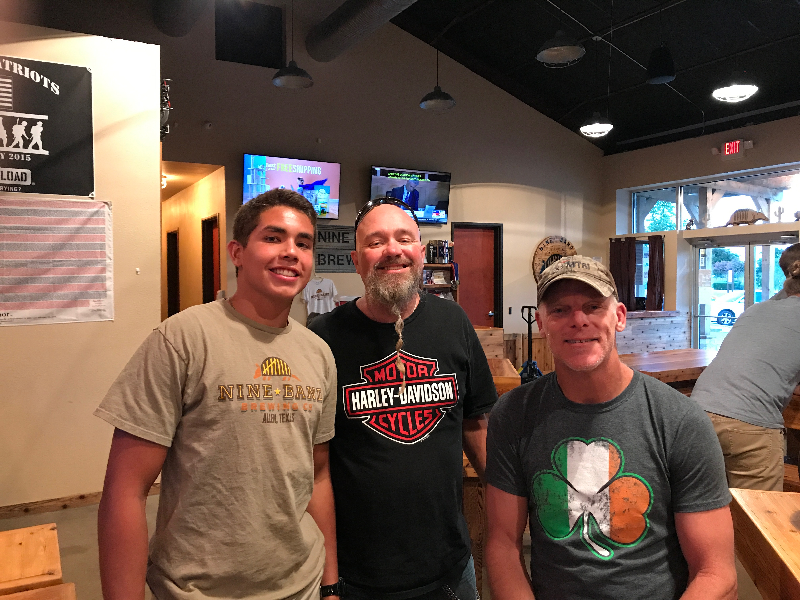

Professional Experience
How sports and work taught me how to serve better
Foundation of Working
Chain GangI got my first job in 3rd grade; before and after
my pee-wee football games, I would hold the chains for
other teams
(like this). I worked at this job from 3rd grade all the way to high school
and saved around $2500.
Working at that age, especially
when I wanted to watch cartoons Saturday mornings instead of standing
outside at 8am, taught me how to
put my head down and put the work over my own emotions. I am
very grateful to my parents for instilling that work ethic in me.
Sweeping, mopping, and cleaning a dusty
factory
has been one of my many jobs. I've been the "lowest"
of the employees. This gave me such an appreciation
for every aspect of a company, and how each employee
works together for a common goal.
I had the opportunity to work daily with the
president of a company for two summers. I saw the
way he respected every employee from the bottom up.
Through these experiences, I make it a priority to
treat every employee wherever I work at with
the same respect.
Work Experience
Creative Services Department
Summer 2019- Present
Working for the athletic department for my school was amazing.
I was able to go to work early in the morning, then go to my workouts right after.
My first assigment was editing the player introduction videos that would be displayed on the big screen
before and during football games. After that, I was able to make promotional videos
of the football team that was showed to the team and prospective athletes. I have always
loved editing videos, and this was an amazing experience to combine my place on the football
team with a passion of mine.
Currently, I am producing highlight videos for prospective NFL draft prospects. Here is a sample
video I made:
Nine Band Brewery
February 2017-August 2017
Bartending at a brewery
at age 18? This was my job
the last spring and summer of my senior year of high school,
and I absolutely loved it.
I was able to talk to such a large and diverse amount of
people: I soaked up
as much knowledge as I could from active or retired service members
from every branch of the military.
I saw hardcore bikers become best friends with
foriegn technology workers. Valuing every customer and
making sure they know they are important became
the way I strived to work.
I learned the value each customer has,
and the story every individual carries with them.

June 2014-June 2016
It was here when I saw first hand how office work
and manual labor work together. I drove a trailer all around
Dallas and rearranged storage units in the hot sun for the first year.
Inventory and attention to detail was demonstrated to me at this time.
My second year I sat at a desk for hours at a time filing paperwork.
Here I learned while my singular small task may not seem important,
it leads to the final goal. I had to take pride in however small
a role I thought I had because my coworkers were depending on me.
This is where I watched the president embody how a leader should act.
Summer 2013
I am grateful to have worked in a blue collar manufactoring job.
I've seen how rare it is that those working in offices
to have also worked on the assembly line. Using machines, filling
out work orders, and assembling parts taught me the entire cycle
of manufactoring plants.
In a sheet metal facory, the floor gets very dusty. Everyday at
before everyone left to home, I swept the floor, took out the trash, and
made sure the work area was ready for the next day.
1st thing I learned: I need to go to college because I do not
want to do this the rest of my life. But doing that helped
develope in me a habit of taking pride in where I worked.
Lessons from Sports
Leave for lift at 5:30am, go to class after, then meetings, then practice,
and finally getting home around 8:30pm. I am used to 15 hour work days.
Maximizing short time windows was necessary to get my work done.
A daily grind towards a goal is how I operate now. While these are all useful,
it still is not the greatest lesson I learned from football.
I have been the team MVP one year and last on the depth chart the next.
Encouraging my teammates, and being happy for their success is now
a part of me. I am grateful to have learned how to always put the team
over myself. I will keep this attitude for whoever my next team is.